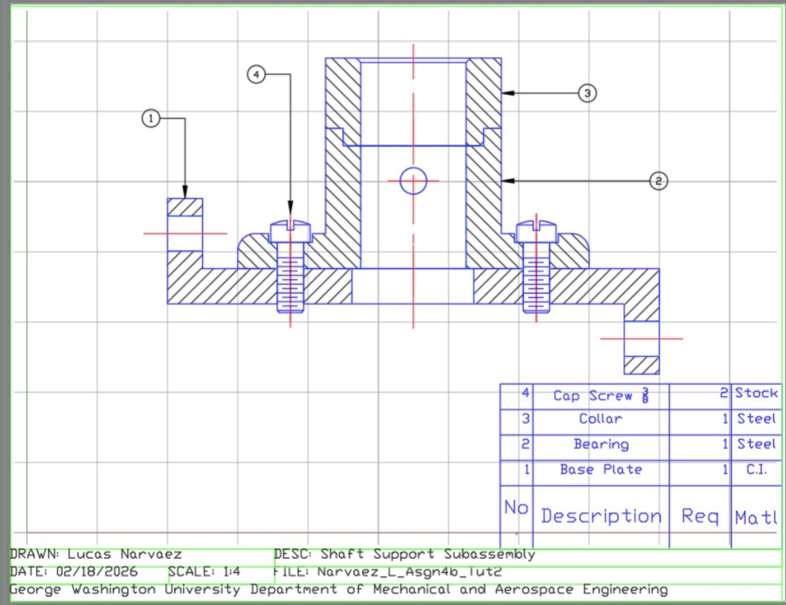

Projects
Engineering and Technical Work
Mechanical Engineering Camera Project
Worked on an introductory engineering class project that involved taking apart a camera system and analyzing how its internal components functioned together. A key part of the project involved generating a spark during testing and observation.
This project strengthened my hands-on problem solving, attention to detail, and interest in how mechanical and electrical components interact in real systems.

Construction Observation Project
Observed large-scale building progress and learned how structural work, site organization, and active construction phases come together during project execution.
This gave me better understanding of real-world construction flow, coordination, and how technical plans are reflected on-site.

Engineering Drawing Project
Created a detailed mechanical drawing of a shaft support subassembly using engineering drawing standards and assembly representation techniques.
This project focused on section views, labeled components, technical communication, and presenting a clear mechanical design layout.
